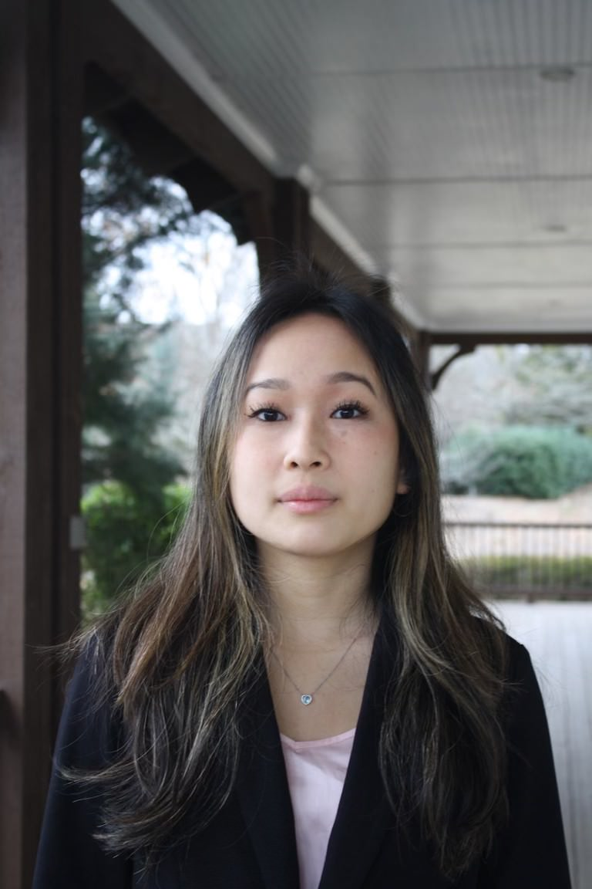

About Us
Welcome to The Market Pulse – your trusted source for clear, concise, and relevant financial news. We know how overwhelming it can be to sift through the endless stream of market updates and economic reports. That’s why we’re here to simplify the noise and deliver what matters most.
Founded by four college students with a shared passion for finance, The Market Pulse was born out of our own frustration with finding quick, easy-to-understand news that didn’t sacrifice depth or quality. Whether you’re a casual reader looking for a snapshot of what’s happening in the markets or a seasoned investor seeking a comprehensive breakdown of the latest M&A deals, we’ve got you covered.
Our mission is simple: to provide quick, quality news for general audiences while offering in-depth analysis for those who want to dive deeper. We focus on delivering clear, actionable insights without the jargon, so you can stay informed without feeling overwhelmed.
At The Market Pulse, we believe that understanding the financial world shouldn’t require a finance degree. Whether you’re just starting to explore the markets or you’re a seasoned pro, we’re here to make finance accessible, engaging, and relevant to you.
Join us as we simplify the complexities of the financial world, one story at a time.
— The Market Pulse Team

Julia is a student at the University of North Carolina at Chapel Hill studying business. She’s interested in Finance and hopes to pursue investment adjacent roles. Outside of school, she enjoys going to the gym, shopping, and listening to music.
Ashrith is a student at Indiana University, in the Kelley School of Business, pursuing a double major in Finance and Business Analytics. He is interested in pursuing a career in high finance. Outside of school, he enjoys practicing golf, playing tennis, and watching TV shows. He is excited to contribute to the MarketPulse and provide clear insights on the financial world to all readers.
Pratham Srivastava
Co-Founder
Pratham is a student at UNC Chapel Hill, pursuing a dual degree in Business and Computer Science with a focus on building a career in high finance. Outside of academics, he enjoys solving puzzles, practicing karate, and playing cricket. With a strong analytical mindset and a passion for simplifying complex ideas, Pratham is dedicated to making financial insights accessible and relevant. He is thrilled to contribute to The MarketPulse, helping readers navigate the financial world with clarity and confidence.
Siddharth Malireddi
Co-Founder
Siddharth is a student at UNC Chapel Hill, pursuing a double major in Computer Science and Data Science and a minor in Business Administration. He aims to utilize his skills in analysis and strategic thinking to work at the intersection of emerging technologies and systems in investment and market strategy. Apart from academics, he enjoys building LEGOs, playing tennis, and playing the violin. He is excited to add to The MarketPulse to empower readers to engage with markets more confidently and insightfully.